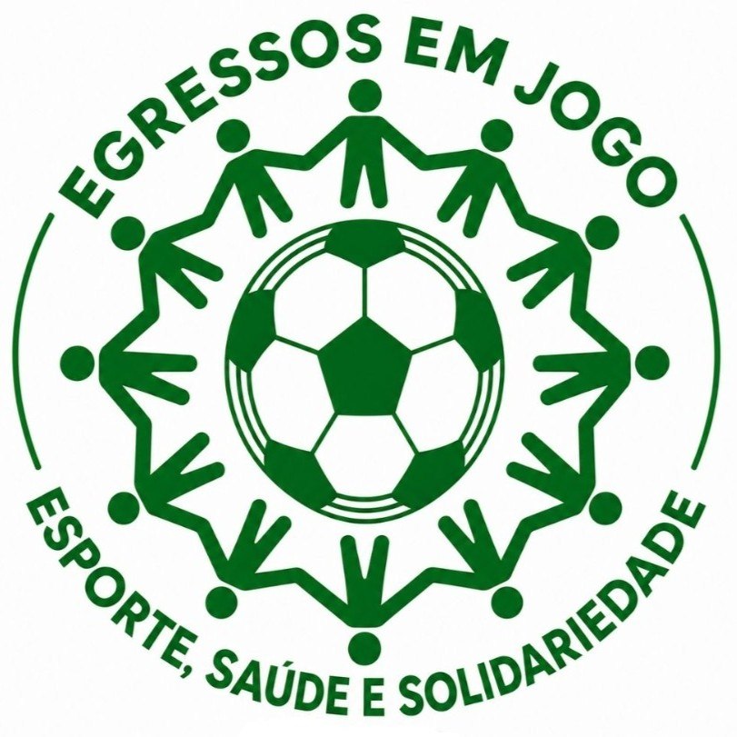
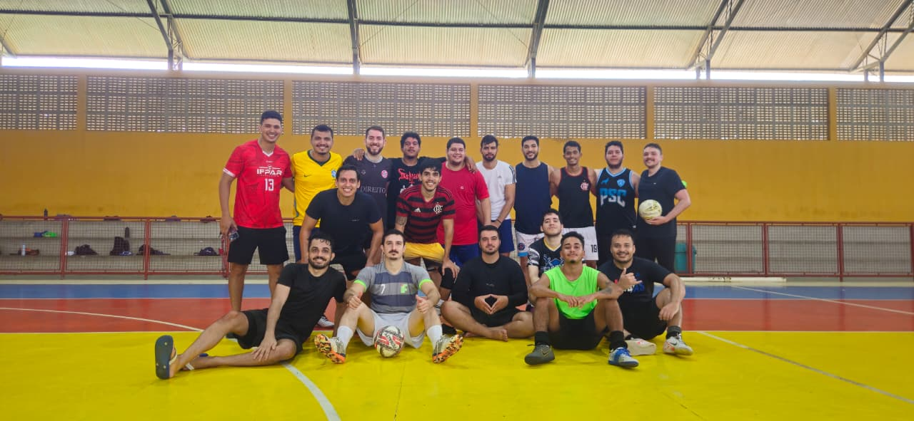
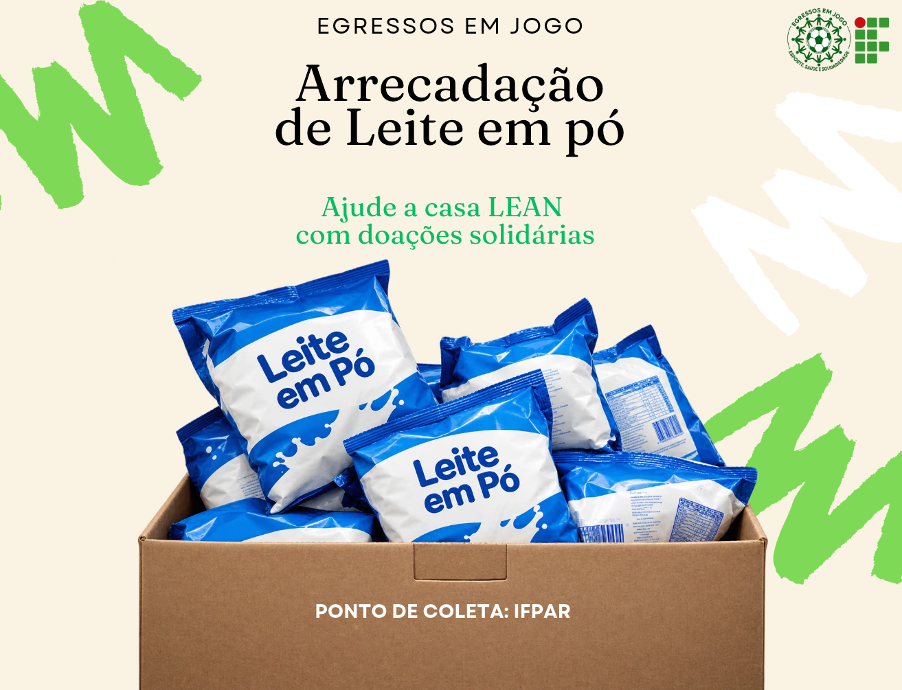

Uma iniciativa de egressos do IFRN — Campus Parnamirim que transforma o futsal em união, saúde e ações solidárias.

O Egressos em Jogo é uma iniciativa do Professor Alison Batista, em parceria com egressos do IFRN e o IFRN — Campus Parnamirim.
O projeto utiliza o futsal como instrumento de integração, incentivo à saúde e fortalecimento dos vínculos entre antigos estudantes da instituição.
Além da prática esportiva, busca transformar essa união em ações de solidariedade, promovendo a participação social e o apoio a instituições e pessoas que necessitam.

O futsal como instrumento de integração, convivência e participação dos egressos.
Incentivo ao bem-estar físico e social por meio da prática esportiva.
Transformar a união do grupo em ações concretas de apoio à comunidade.
O Egressos em Jogo está promovendo uma campanha de arrecadação de leite em pó em benefício do LEAN — Lar Espírita Alvorada Nova.
A iniciativa une o espírito de equipe do esporte à solidariedade, mobilizando a comunidade do IFRN para contribuir com essa causa.
Todos os pontos estão localizados no IFRN — Campus Parnamirim.

O esporte é o ponto de partida. A transformação acontece quando levamos esse espírito para além da quadra.
Encontros esportivos no Ginásio do IFRN campus Parnamirim, fortalecem os laços entre antigos alunos e incentivam a prática esportiva e a convivência.
Arrecadação presencial de leite em pó para o Lar Espírita Alvorada Nova, com pontos de coleta no IFRN — Campus Parnamirim.
05 a 16 de outubroEm breve, novidades sobre nossas ações!
Entre em contato conosco pelo WhatsApp para saber mais sobre o projeto Egressos em Jogo e nossas ações.
Conversar pelo WhatsApp